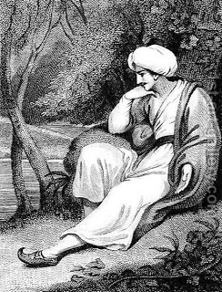

Bava Batra 55 - The Legal Force of Secular Law

The law of the kingdom is the law
All tax and civil laws that prevail in a country have legal force in Jewish court, since the country's citizenry voluntarily accepts upon itself to abide by the government's laws. Thus, a Jew who takes possession of property according to the provisions of local law is not guilty of theft even if the Torah law would consider the property belonging to another Jew. This applies, however, only to the laws sanctioned by the constitution of the country but not when monarchy appropriates property by force.
The chazakah of the Persians is not effective until forty years have elapsed
Although in Persia only recorded real estate transactions were recognized as valid, anyone who occupied a property for forty years was considered to be its legitimate owner.